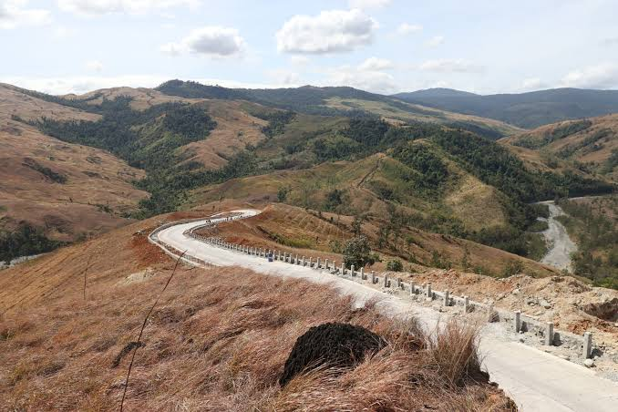

Viewdeck

The Viewdeck in Mapita, Aguilar, Pangasinan offers sweeping mountain views along the "daang katutubo" (native road), making the drive up as memorable as the destination itself. It's a quiet spot best enjoyed slowly, whether you're stopping for photos, watching the sunset, or just taking in the peaceful mountain air away from the noise of the city.
| Location | Mapita, Aguilar, Pangasinan |
|---|---|
| Best Time to Visit | Late afternoon, for sunset views |
| Activity | Sightseeing, photography |
| Entrance Fee | Free |